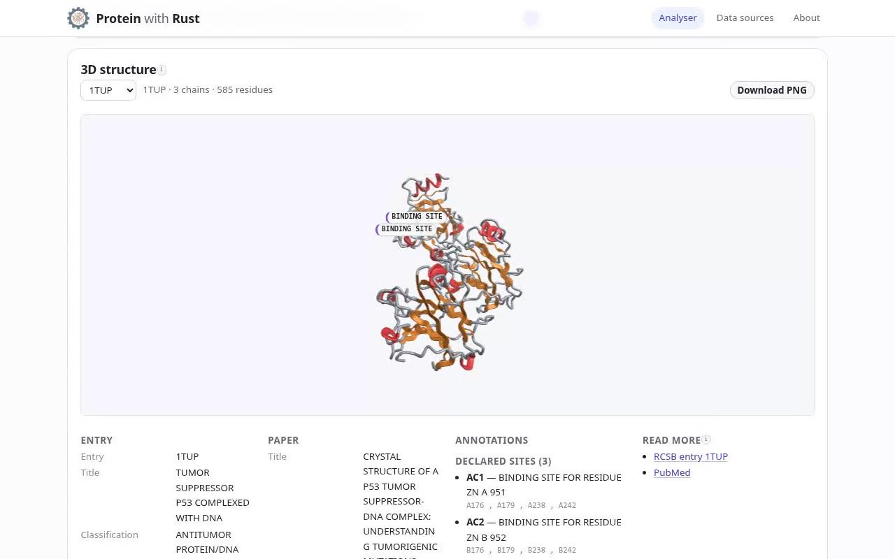

A protein analyser with no server on the critical path
Paste a sequence, a UniProt accession, an Ensembl protein ID, or import a FASTA, GenBank, GFF3 or PDB file. You get composition, molecular weight, isoelectric point, aromaticity, a feature map, a hydropathy profile and — when the record has a structure — an interactive 3D cartoon.
The design decision underneath everything
Browser WebAssembly cannot issue HTTP requests cleanly, so the split is network in TypeScript, compute in Rust. But the Rust core is not a parsing helper: it decides which URLs to request and how to interpret the responses, so the interesting logic is still testable Rust with no browser in sight. Because UniProt and Ensembl both answer cross-origin requests, the browser calls them directly — open the app and it works, with nothing to deploy on the path that matters.
Honest failures, and one deliberate refusal
- An unreachable API, an unparseable file, a DNA sequence or an identifier outside the protein namespaces each produce a card that names the problem, rather than a spinner that never ends.
- Nucleotide input is refused with an explanation rather than quietly translated — this is a protein tool and it says so.
- Annotations are read from the coordinate file it already downloaded: declared sites, named mutations, bound molecules, modified residues, chain ends and disulfides as a line between their two sulfurs. No second request. A label whose residue is behind the protein is hidden instead of drawn through it.
Two renderers, so hardware acceleration is optional
The structure view extrudes a smoothed backbone as a tube — round and thick for helices, wide and flat for strands, thin for loops, coloured by secondary structure. WebGL is used when the browser offers it; the same mesh, lighting and depth cueing are rasterised on the CPU when it does not, so a browser with hardware acceleration switched off still gets a picture.
Testing and deployment
- Rust domain tests for parsers, statistics, properties, identifiers and provider planning; a separate suite for the 3D library.
- Headless Node checks over the WebAssembly ABI, the API layer, 3D maths and the built bundle — no browser, no network.
- A Playwright suite drives the built app in real Chromium.
- One
wrangler deploy: a Cloudflare Worker serves the static bundle and answers/api/*itself, so the free plan is enough. CI runs the core, worker, library and web jobs before it deploys, then reads the deployed URL back to confirm the three pages and the WebAssembly binary match what was uploaded.
Not built yet
BLAST. The relay for it exists and is tested, but no control in the interface calls it — so it is not on this page as a feature.


